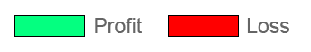

Data Logging Tool
Profit & Loss/ Wage Bills
Report
Images & References
Premier League Table
Football Data API
Premier League 2019-2020 Data Logging Tool
Choose your favourite team from the dropdown below, submit then refresh the page to see your vote being added!
AFC Bournemouth
Arsenal FC
Aston Villa FC
Brighton & Hove Albion FC
Burnley FC
Chelsea FC
Crystal Palace FC
Everton FC
Leicester City FC
Liverpool FC
Manchester City FC
Manchester United FC
Newcastle United FC
Norwich City FC
Sheffield United FC
Southampton FC
Tottenham Hotspur FC
Watford FC
West Ham FC
Wolverhampton Wanderers FC
Submit
Refresh Page
